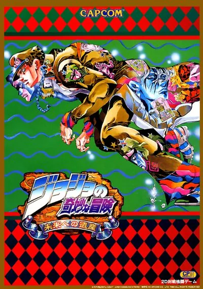

FBA (FinalBurn Alpha)
JoJo's Bizarre Adventure: Heritage for the Future
- Año: 1999
- Desarrollador: Capcom
- Género: Lucha / Uno contra uno
- Jugadores: 2 jugadores
- A dos: uno contra otro, a la vez
Lucha de Capcom (1999) basada en Stardust Crusaders, la tercera parte del manga de Hirohiko Araki: Jotaro y sus aliados viajan para acabar con Dio. Su seña es el botón Stand, que saca al espíritu guardián de cada personaje.
Controles
Probado en la bartop (2026-11-19, tercera prueba): bien: B ataque fuerte, A medio, R saca o retira el Stand, Y flojo y X esquiva rodando. Probado en la bartop (2026-11-19): los botones van como en la tabla; A hace otro ataque, distinto de los de Y y X. Segunda prueba (2026-11-19): en la lista de FBA sale un solo JoJo y arranca; R funciona, pero no ataca: el personaje da una vuelta sobre sí mismo para escabullirse. Por qué: FinalBurn Neo da a este juego seis botones: ataque flojo, medio y fuerte, Stand, «All Attacks» (los tres ataques a la vez, un atajo) y uno sin uso (código de FinalBurn Neo, d_cps3.cpp). R (antes L) lleva el atajo de los tres ataques, que en JoJo hace esa esquiva rodando; el ataque fuerte es, con toda probabilidad, el «otro ataque» de A. ⚠️ Falta confirmarlo jugando. Cuatro botones del juego: tres de ataque (flojo, medio y fuerte) y el del Stand, más X con los tres ataques a la vez (ajuste propio: conjuntos 2026-11-19-jojo-r-en-vez-de-l, 2026-11-19-jojo-medio-en-r y 2026-11-19-jojo-stand-en-r) (FinalBurn Neo, con ajuste propio: conjunto 2026-11-19-jojo-r-en-vez-de-l).
| Panel | Juego |
|---|---|
 | Saltar |
 | Atacar fuerte |
 | Atacar medio |
 | Invocar o retirar el Stand |
 | Atacar flojo |
 | Esquivar rodando (los tres ataques a la vez) |
  | Empezar |
 | Meter una moneda |
+  | Salir del juego |
El panel en FBA (FinalBurn Alpha)

🔎 Dudas para mirar jugando (1)
Datos de la guía que las fuentes no aclaran: si los compruebas en la bartop, apúntalo en las pruebas.
- ⚠️ El final depende del personaje: se ve uno, el de Jotaro, en el vídeo de «Vídeos».
Argumento
Recopilado de internet (2026-11-16). Lo marcado con ⚠️ no está probado en la bartop.
Basado en Stardust Crusaders, la tercera parte del manga de Hirohiko Araki. Jotaro Kujo, un estudiante japonés, descubre que tiene un poder sobrenatural, un Stand. Su abuelo, Joseph Joestar, le explica que ese poder viene de la influencia del enemigo jurado de la familia Joestar, el vampiro Dio.
La madre de Jotaro empieza a desarrollar un Stand que no puede controlar y su vida corre peligro, así que Jotaro y Joseph emprenden un viaje para acabar con Dio y salvarla. En el modo historia cada personaje sigue a grandes rasgos la historia del manga.
⚠️ El final depende del personaje: se ve uno, el de Jotaro, en el vídeo de «Vídeos».
Fuentes
Jugabilidad
Recopilado de internet (2026-11-16). Lo marcado con ⚠️ no está probado en la bartop.
- Tipo de juego: lucha de Capcom, del mismo equipo que Street Fighter III. Heritage for the Future (1999) es la versión ampliada de JoJo's Venture (1998) y el último juego de la placa CPS-3.
- Stands: casi todos los personajes tienen uno y lo sacan o lo retiran con el botón Stand. Con el Stand fuera, los ataques son más fuertes, hay golpes nuevos, mejoras como el doble salto y el Stand puede atacar por su cuenta.
- Riesgo: si golpean al Stand, el daño lo recibe el luchador, y el doble si el Stand está lejos. La barra del Stand baja con los golpes y se llena al retirarlo; si se vacía, el luchador queda aturdido (Stand Crash).
- Choques de puños: cuando dos Stands chocan, los jugadores tienen que machacar botones para ganar.
- Algunos personajes tienen Stands pasivos, que forman parte de sus golpes, y el joven Joseph no tiene: usa el Hamon.
- Barra de supergolpes, como en los demás juegos de lucha de Capcom.
- Modo historia: entre combates hay fases especiales basadas en el manga, como una de desplazamiento lateral para encontrar al asesino N'Doul esquivando su Stand de agua, o un combate especial contra el Stand Death 13.
Fuentes
Guía de niveles
Recopilado de internet (2026-11-16). Lo marcado con ⚠️ no está probado en la bartop.
Los rivales del modo historia dependen del personaje. Con Jotaro, según el longplay de «Vídeos»:
| Combate | Rivales |
|---|---|
| 1 a 4 | Muhammad Avdol · Noriaki Kakyoin · Devo el Maldito · N'Doul (fase especial) |
| 5 a 8 | Chaka · Death 13 (fase especial) · Alessi · Vanilla Ice |
| Final | Dio (dos rondas) |
Fuentes
capítulos del longplay de Loading Geek (ver «Vídeos») · Wikipedia
Objetos
Recopilado de internet (2026-11-16). Lo marcado con ⚠️ no está probado en la bartop.
- Es un juego de lucha: no hay objetos.
Fuentes
—
Trucos y secretos
Recopilado de internet (2026-11-16). Lo marcado con ⚠️ no está probado en la bartop.
- La versión de la bartop es Heritage for the Future de Europa (
jojobaner1, 990927, sin CD). La primera versión, JoJo's Venture (jojo), tiene menos personajes. - Salieron versiones para PlayStation y Dreamcast (1999) y en HD para PlayStation 3 y Xbox 360 (2012).
- ⚠️ No he encontrado trucos fiables de la recreativa.
Fuentes
Longplay

Partida completa de la recreativa, modo historia con Jotaro (28 min), de Loading Geek: [JoJo's Bizarre Adventure (Arcade 1999) - Jotaro Kujo [Story Mode: Playthrough/LongPlay]](https://www.youtube.com/watch?v=gJwvkwyrAIU).
Pulsa el minuto de un nivel para ver el vídeo desde ese punto.